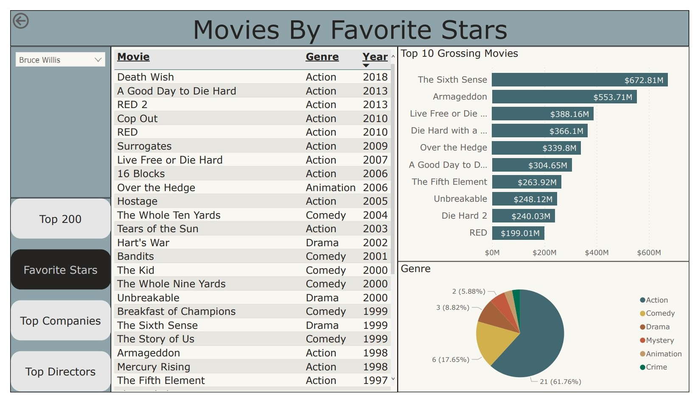
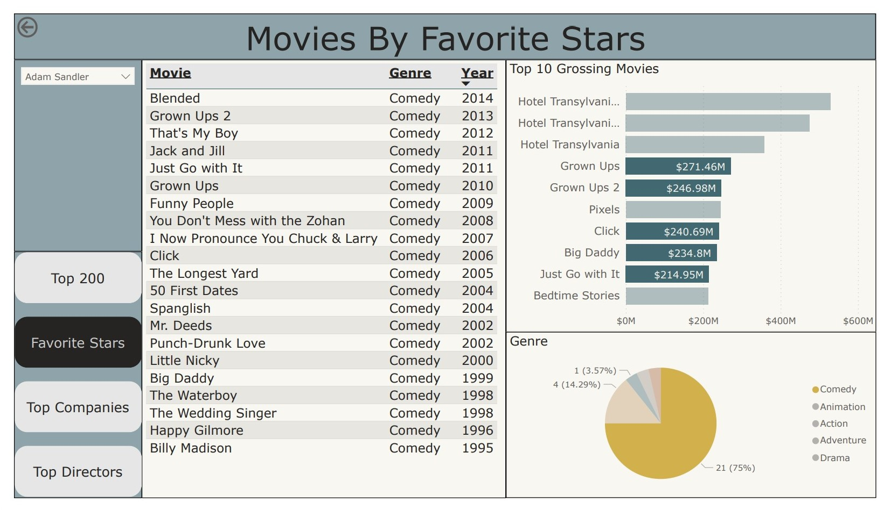
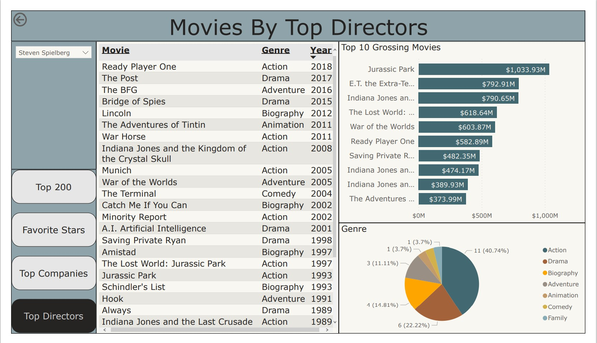

Using the Movies Dataset taken from Kaggle containing over 7000 movies to find new movies to watch by using SQL to lookup stars, companies, and directors as reference. Additionally, using Python to look at other fields for more correlations that might work. Then using that gathered information present it in an Amazing Power BI Dashboard.
- SQL - using basic, immediate, and advance SQL skills including aggregate functions, temp tables, and subqueries to help find new movies to watch.
- Power BI - create an simple multi-page dashboard displaying skills in page navigation, slicers, tables, stacked bar charts, and pie charts.
- Python - using python along with multiple popular libraries such as pandas, seaborn, numpy, and matplotlib in order to see if there is any additional fields that can correlate with good movies.
SQL and Power BI
Used simple SQL query to find the most popular stars ranked by how much their movies made.
SELECT star, SUM(gross) AS GrossSum
FROM MoviesProject..movies$
GROUP BY star
ORDER BY GrossSum DESC
;I then narrow down to my favorite stars.
SELECT star, gross, name, genre, year
FROM MoviesProject..movies$
WHERE star IN ('Robert Downey Jr.','Tom Cruise','Will Smith','Johnny Depp','Vin Diesel',
'Dwayne Johnson','Bruce Willis','Adam Sandler','Brad Pitt','Channing Tatum',
'Chris Hemsworth','Chris Pratt','Denzel Washington','Donnie Yen','Jackie Chan',
'Julia Roberts','Keanu Reeves','Liam Neeson','Mark Wahlberg','Matt Damon','Ryan Reynolds')
ORDER BY star, year DESC, gross DESC
;With the information from the query above I created the following dashboard displaying my favorite movie stars via a drop down menu on the left.
By selecting certain genres in the pie chart you are further able to drill down to more specific movies.
Next, I created SQL queries for the companies and directors field, but using temp tables and subqueries in order to display that skill.
DROP TABLE IF EXISTS #temp_DirectorGrossSum
CREATE TABLE #temp_DirectorGrossSum(
director nvarchar(255),
grossSum float
);
INSERT INTO #temp_DirectorGrossSum
SELECT director, SUM(gross) AS GrossSum
FROM MoviesProject..movies$
GROUP BY director
ORDER BY GrossSum DESC
;
-- list of movies by the TOP 10 directors
SELECT director, gross, name, genre, year
FROM MoviesProject..movies$
WHERE director IN (SELECT TOP 10 director
FROM #temp_DirectorGrossSum
ORDER BY grossSum DESC
)
ORDER BY director, year DESC, gross DESC
;With this I created additional pages in Power BI in order to display clean information as well as show ability to create multiple page and simple navigation between them.
Python
After creating the initial project I looked into the data further by using python in combination with popular libraries such as pandas, seaborn, numpy, and matplotlib in order to see if there are any more fields that I can use to find more movies. The python portion itself does a really good job in terms of display and flow so please go here.
After looking for more fields with python we found budget and voters to have higher correlation.
corr_matrix = df_num.corr()
sns.heatmap(corr_matrix, annot=True)
plt.title('Correlation Matrix - Numerical Features')
plt.xlabel('Movies')
plt.ylabel('Movies')
plt.show()Unfortunately looking at budget and voters further in SQL it can be seen that they are not good fields for finding new movies so no additional dashboards was created.
Links
Please also take a look at the following links to the dataset, scripts, and dashboards
Note: Apologies, currently Power BI link is not available due to not being able to open account with Power BI without a work account.